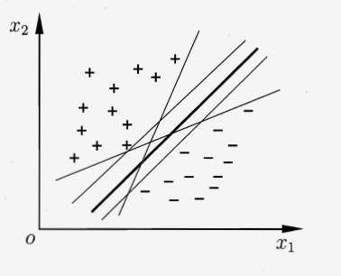
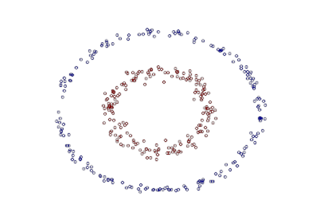
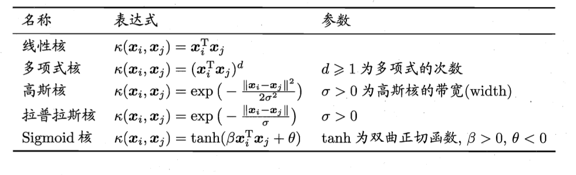
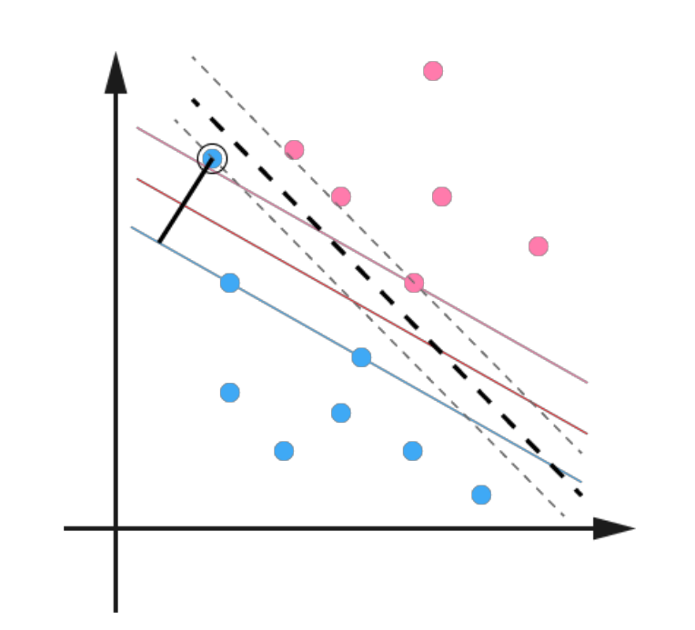
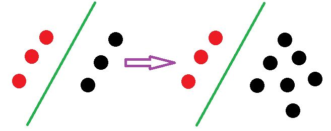
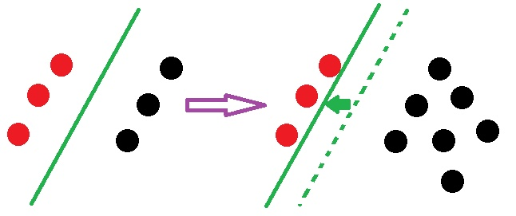

SVM#
1 一个例子#
在了解支持向量机之前，我们先来思考下面这个问题:
有两类训练样本点("+"和"-")二维平面分布如下图所示，请问有什么方法可以将这两类训练样本点完全分开呢?
能想到的最简单而直接的办法就是找到一条分类直线将两者分隔开来。不过，这又引出另外一个问题: 符合条件的分类直线有无数条，究竟哪条才是最合适的呢?

从图上看，直观感觉最合适的分类直线应该是那条粗线，因为它符合两个特点:
- 该分类直线到两类训练样本最近点的距离相等
- 在上一个特点的基础上，该分类直线离两类训练样本最近点的距离比其它任何直线都要长
在实际情况中，由于噪声因素的存在，采样点可能比训练数据要更加靠近分隔线，如果采用满足以上两点的分类直线，那么对采样点噪声干扰的"容忍"度自然是最大的，也就是该分类直线的泛化能力最好。
如果将上面例子的特征扩张到三维，分类器就是一个平面，扩张到更多维，分类器就是一个超平面。
至此，我们可以从上述例子引出支持向量机的一些基本定义: 支持向量机是一种二分类模型，其基本模型定义为特征空间上的间隔(后面给出了定义)最大的线性分类器。
下面对支持向量机进行数学化和一般化。
2 深入理解SVM#
为进一步增加对支持向量机的理解，我们需要熟悉以下的概念: 间隔 超平面到两类训练样本最近点的距离之和。 支撑向量 两类训练样本集中离超平面最近的点。
在n维样本空间中，假设训练集合$D={(x_1,y_1),(x_2,y_2),...,(x_m,y_m)}$，其中$x_i$为n维向量，$y_i \in {-1,+1}$(后面会解释为何选用$\pm1$代表不同类别)。分类超平面可以由如下线性方程来表示:
其中，$w=(w_1;w_2;...;w_n)$是超平面的法向量，$b$为偏移量，表示超平面与原点的距离。
假定超平面$w^Tx+b=0$可以将两类训练样本正确分开，那么对于任何训练样本$(x_i,y_i)$，如果$w^Tx_i+b>0$，约定$y_i=+1$;如果$w^Tx_i+b<0$，则约定$y_i=-1$。(实际上约定可以反过来，本质上是一样的，都是用不同的符号来代表两类样本，只是目前的约定比较符合人的常识)。
令与分类超平面平行且分别经过异类支撑向量的超平面为(后面会解释为何要这么规定): 根据高等数学的知识，样本点$x$到超平面$w^Tx+b=0$的距离是 因此，间隔的数学表达式为 乍看，间隔似乎只与参数$w$有关，与参数$b$无关，但实际还包含一个约束条件，由于支撑向量是离分类超平面最近的样本点，这也就意味着对于所有$y_i=+1$的训练样本，有$w^Tx_i+b \geq 1$; 对于所有$y_i=-1$的训练样本，有$w^Tx+b \leq -1$。由此可以推导出，对于所有的训练样本都必须满足$y(w^Tx+b) \geq 1$。
那么间隔的最大化可以由以下数学表达式描述 $ |w|^{-1}$最大就相当于$|w|$最小，而$|w|$表示的是对向量$w$的均方根运算，在实际计算中根号比较难处理(特别是后面优化中遇到的求导)，所以最后采用的是最小化$\frac12 |w|^2$，加上常数$\dfrac12$是为了后面对$w$求导时能消去产生的常数2。
综上，我们可以整理一下上面的思路
最优分类超平面问题 间隔最大化问题
以上就是支持向量的基本型。
3 一些问题的解释#
上面还遗留了两个问题，由于它们的原因本质上是一样的，所以就放在一起说。
- 为什么规定$y \in {-1,+1}$，可以是其它非零值吗?
- 支撑向量所在超平面的表达式为什么要规定等于$\pm1$，可以是其它非零值吗?
对问题的回答:
以上两个问题都可以规定其它非零值，但是必须保证绝对值相等，符号相反，这是由分类超平面的性质(到异类支持向量的距离相等方向相反)决定的。
不过，哪怕取其它非零值，其本质与取$\pm1$的情况是一样的，以下给出证明。
如果规定$y \in {-a,+a}$，其中$a>0$， 间隔最大化问题可以表示为 令$w'=\frac{w}{a}$，$b'=\frac{b}{a}$，问题的表达式可以转化为 这跟上一节$y \in {-1,+1}$得到的结果是完全相同的。
对于支撑向量所在超平面的表达式的规定其实也是一个道理。
4 对偶问题#
接上第2节的内容，我们现在面对的是一个凸优化问题，准确来说，应该是一个凸二次规划问题，因为目标函数是二次的，约束条件是线性的。该问题有现成的二次规划(Quadratic Programming)优化计算包可以求解，但是我们有更加高效的做法。
我们使用高等数学中的拉格朗日乘子法将凸二次规划问题转变为对偶问题，具体是将每个约束项乘上一个拉格朗日乘子$\alpha \geq 0$，并添加到原目标函数中。对于我们的问题，运用拉格朗日乘子法可得新的目标函数为:
其中，$\alpha=(\alpha_1;\alpha_2;...;\alpha_m)$。
令$L(w,b,\alpha)$对$w$和$b$求偏导数并等于0 把以上结果代入目标函数，得到相应的对偶问题
解出$\alpha$后就可以由以下等式得到参数$w$和$b$ 参数$b$的等式的由来: 规定$y=+1$类支持向量的符号为$x_+$，$y=-1$类支持向量的符号为$x_-$，由其所在超平面的数学表达式 可得，
实际上，
5 KKT条件#
上一节中的对偶问题是一个不等式约束优化问题，对于不等式约束，只要满足KKT条件，问题依然可以使用拉格朗日乘子法来解决。要弄明白KKT条件理论内容需要的篇幅比较长，这里先不展开讲，大家只要知道对于不等式约束优化问题的可行解必须满足KKT条件即可。
对于典型的不等式约束优化问题: 采用拉格朗日乘子法得到无约束优化问题: 该问题相应的KTT条件为: KKT条件中每个式子的含义:
(1)拉格朗日乘子法取得可行解的必要条件;
(2)松弛互补条件;
(3)初始的约束条件;
(4)不等式约束的拉格朗日乘子需要满足的条件。
假定$f(x)=w^Tx+b$应用到上一节的对偶问题，可以得到相应的KKT条件: 不难发现，对任意训练样本$(x_i,y_i)$，有$\alpha_i=0$或者$y_if(x_i)=1$。若$\alpha_i=0$，表明该样本不会$L(W,B,\alpha)$中出现; 若$y_if(x_i)=1$，表示该样本点是一个支持向量。
由此可以知道支持向量机的一个重要性质: 完成训练得到的模型仅与支持向量有关，与其他的训练样本无关。
6 序列最小最优化SMO算法#
FIXME
对于第4节得到的对偶问题，可以由二次规划算法求解，不过它的计算量正比于训练样本的数量，应用到实际任务效率不高，为解决该问题，序列最小最优化(Sequential Minimal Optimization)算法应运而生。
SMO算法的基本思路是每次迭代只更新一个拉格朗日乘子，即假定$\alpha_i$外的所有参数都是常数，然后求$\alpha_i$上的极值。由于存在约束条件$ \sum \limits_{i=1}^m \alpha_i y_i=0$，如果只假定$\alpha_i$是变量的话，$\alpha_i$的值就由约束条件唯一确定了，与SMO算法的思路相悖。因此，SMO算法每次迭代都选用两个变量$\alpha_i$和$\alpha_j$，其他的乘子都认为是常数，求此时拉格朗日乘子式的优化解。
7 线性不可分的情况#
关于分类超平面，对于一个数据点$x$进行分类，实际上是通过把x带入到$f(x)=w^Tx+b$算出结果然后根据其正负号来进行类别划分的。而前面的推导中我们得到 因此分类函数为: 这里形式的有趣之处在于，对于新点$x$的预测，只需要计算它与训练数据点的内积即可($<\cdot,\cdot>$表示向量内积)，这一点至关重要，是之后使用核函数(Kernel)进行非线性推广的基本前提。
到目前为止，SVM的分类能力还比较弱，只能处理线性可分的情况，例如遇到以下的分类情况SVM就无能为力。

不过，在得到对偶形式之后，通过核函数推广到非线性的情况是一件非常容易的事情。
8 核函数方法#
我们已经了解到SVM处理线性可分的情况，而对于非线性的情况，比较原始的方法是我们通过一个映射$\phi(\cdot)$将原始空间的非线性特征映射到一个高维空间的线性特征，在新的特征空间中使用SVM线性学习器，这样做有一个很大的问题: 随着原始空间特征个数的增多，映射到的高维空间特征个数呈指数级增长，甚至会出现无穷维的情况。下面举个例子:
上一节给出的图中，数据集是用两个半径不同的圆圈加上了少量的噪音生成得到的，所以一个理想的分界应该是一个“圆圈”而不是一条线(超平面)。如果用$X1$和$X2$来表示这个二维平面的两个坐标的话，二次曲线(圆圈是二次曲线的一种特殊情况)的方程可以写作这样的形式: 注意上面的形式，如果我们构造另外一个五维空间，其中五个坐标的值分别为$Z_1=X_1$，$Z_2=X_1^2$，$Z_3=X_2$，$Z_4=X_2^2$，$Z_5=X_1X_2$，那么显然，上面的方程在新的坐标系下可以写作: 关于新的坐标$Z$，这正是一个超平面方程，也就是说我们做一个映射$\phi:R2 \rightarrow R5$，将$X$按照上面的规则映射为$Z$，那么在新的空间中原来的数据将变成线性可分的，从而使用之前我们推导的SVM线性分类算法就可以进行处理。 由之前的内容可知分类函数为 在映射后的分类函数变为: 这样一来问题似乎是解决了，不过细心想想在上面的例子里，对一个二维空间做映射，新空间是原始空间特征的所有一阶项和二阶项的组合，得到了五个维度; 如果原始空间是三维，那么我们会得到 19 维的新空间，这个数目是呈爆炸性增长的，这给计算带来了非常大的困难，而且如果遇到无穷维的情况，就根本无从计算了。为解决该问题，于是提出了核函数。
继续从上面的例子出发，设两个向量$x_1=(\eta_1,\eta_2)^T$和$x_2=(\xi_1,\xi_2)^T$，而$\phi(\cdot)$就是前面的5维空间映射，因此映射过后的内积为: 另外，注意到: 二者形式非常相似，只需要将前一个式子的某几个维度线性缩放，然后加上一个常数维度，就能变成后一个式子。从公式角度看，若令$\phi(X_1,X_2)=(\sqrt{2}X_1,X_1^2,\sqrt{2}X_2,X_2^2,\sqrt{2}X_1X_2,1)^T$，$<\phi(x_1),\phi(x_2)>$ 就与后者完全一致。
虽然两种方法的结果是一致的，但它们的区别在于: 前者是将特征映射到高维空间，然后进行内积计算; 后者直接先对特征进行内积，然后再通过特定函数将内积结果映射到高维空间。
有上面的区别可以知道，后者的内积是在原低维空间进行的，所以映射的维度爆炸问题对其完全没有影响。我们将这种对两个向量的内积隐式映射的函数叫做核函数(Kernel Function)。
上面例子中的核函数是: 采用核函数的分类函数表达式如下: 这样计算的问题算解决了，避开了直接在高维空间中进行内积计算，而结果却是等价的。不过，如果对于任意一个映射，想要构造出合适的核函数是比较困难的。
9 常用核函数#
常用核函数包括:

10 核函数方法的总结#
上面说了那么多，现在对其简要概括为以下三点: 我们会经常遇到线性不可分的实际样例，对此常用的做法是把样例特征映射到高维空间中去; 但进一步，如果凡是遇到线性不可分的样例，一律映射到高维空间，那么这个维度大小是会高到可怕的(如上文中19维乃至无穷维的例子)，导致计算量非常庞大。那怎么办呢? * 此时，核函数就隆重登场了，核函数的价值在于它虽然也是将特征从低维到高维的转换，但核函数绝就绝在它事先在低维上进行了内积计算，避免了直接在高维空间中的复杂计算。
核函数方法的优点:
内积计算在低维空间完成，避免了映射的维度爆炸问题。
核函数方法只需要对SVM中的内积进行下面的替换:$
核函数方法的缺点: * 核函数的选择比较困难，要具体问题具体分析。
11 使用松弛变量处理异常点的方法#
在最开始讨论支持向量机的时候，我们就假定数据是完全线性可分的，即我们可以找到一个可行的超平面将数据完全分开。后来为了处理非线性数据，使用Kernel方法对原来的线性SVM进行了推广，使得非线性的的情况也能处理。虽然通过映射$\phi(\cdot)$将原始数据映射到高维空间之后，能够线性分隔的概率大大增加，但是对于某些情况还是很难处理。
例如可能并不是因为数据本身是非线性结构的，而只是因为数据有噪音。对于这种偏离正常位置很远的数据点，我们称之为异常点(outlier)，在我们原来的SVM模型里，异常点的存在有可能造成很大的影响，因为超平面本身就是只有少数几个支持向量决定的，如果这些支持向量中存在异常点，其影响就会非常大。例如下图:

用黑圈圈起来的那个蓝点是一个异常点，它偏离了自己原本所属的半空间，如果直接忽略掉它的话，原来的分类超平面还是挺好的，但是由于这个异常点的出现，导致分类超平面不得不被挤歪了，变成途中黑色虚线所示，同时间隔也相应变小了。当然，更严重的情况是，如果这个异常点再往右上移动一些距离的话，我们将无法构造出能将数据分开的超平面。为了处理这种情况，SVM允许数据点在一定程度上偏离超平面。例如上图中，黑色实线所对应的距离，就是该异常点偏离的距离，如果把它移动回来，就刚好落在原来的超平面上，而不会使得超平面发生变形了。
由此，引出"软间隔"(soft margin)的概念: 具体来说，支持向量机是要求所有样本严格满足所有样本必须满足约束条件的，即所有样本都必须划分正确，这称为"硬间隔"(hard margin)，而"软间隔"则是允许某些样本不满足约束 现在考虑到异常点的问题，约束条件变成: 其中$\xi_i \geq 0$称为松弛变量(slack variable) ，对应数据点$x_i$允许偏离的函数间隔量。当然，如果我们运行$\xi_i$任意大的话，那任意的超平面都是符合条件的。所以，我们在原来的目标函数后面加上一项，使得这些$\xi_i$的总和也要最小: 其中$C$是一个参数，用于控制目标函数中两项(“寻找margin最大的超平面”和“保证数据点偏差量最小”)之间的权重。注意，其中$\xi$是需要优化的变量，而$C$是一个参数事先确定好的常量。完整地写出来是这个样子: 用之前的方法将限制或约束条件加入到目标函数中，得到新的拉格朗日函数，如下所示: 分析方法和前面一样，转换为另一个问题之后，我们先让$L$针对$w$，$b$和$\xi$最小化: 将$w$带回$L$并化简，得到和原来一样的目标函数: 不过，由于我们得到$C-\alpha_i-r_i=0$而又有$r_i \geq 0$，因此有$\alpha_i \leq C$，所以整个对偶问题现在写作:
可以看到，"软间隔"的对偶问题与"硬间隔"的对偶问题的区别在于，拉格朗日乘子$\alpha$多了一个上限$C$。这样一个完整的可以处理线性和非线性并能容忍噪音和异常点的支持向量机终于介绍完毕。
12 本章小结#
行文至此，可以做个小结，SVM 它本质上是一个分类方法，用$w^Tx+b$定义分类函数，于是求使间隔最大的w、b，引出$\dfrac12||w||^2$，继而引入拉格朗日乘子法，将问题化为对拉格朗日乘子$\alpha$的求解(求解过程中会涉及到一系列最优化或凸二次规划等问题)，如此，求 w、b与求$\alpha$等价，$\alpha$的求解可以用一种快速学习算法SMO，至于核函数方法，是为处理非线性情况，若直接映射到高维计算会有维度爆炸的困扰，故在低维下就计算，等效于高维的表现。
FIXME
13 SVM和LR的异同#
相同点： - 都是分类算法； - 如果不考虑核函数，SVM和LR都是线性分类算法，也就是说它们的分类决策面都是线性的； - SVM和LR都是监督学习算法； - SVM和LR都是判别模型。判别模型就是由数据直接学习决策函数$Y=f(X)$或条件概率分布$P(Y|X)$来作为预测的模型。基本思想是在有限样本条件下建立判别函数，不考虑样本的产生模型，直接研究预测模型。判别方法关心的是对于给定的输入$X$，应该预测什么样的输出$Y$。 - 不同点：
- 两者最本质的区别就是损失函数不同。
LR的目标函数为logistic regression + 正则项：
SVM的目标函数为：
其损失函数实际上是合页损失(hinge loss function)：
下标"+"表示取正值函数：
- SVM只考虑离分界面最近的若干个点(即支持向量)，而LR则会考虑所有的数据点，只是离分界面比较远的点作用相应也较小。
虽然说SVM和LR的思路都是相同的，都是增大对分类影响较大点的权重，减小对分类影响较小点的权重，但是两者采用的损失函数不同，这就导致处理的程度有所差别：LR采用sigmoid映射函数大大减小了离分类平面点较远的权重；LR采用合页损失函数，只保留若干靠近分类超平面的样本点(也就是支持向量)，其余的权重直接设置为0。
根据以上的讲解，我们会发现，相比于LR，数据非平衡问题对SVM的影响更小，下图给出了直观的比较。
SVM的情况：

LR的情况：

很明显，对于LR，由于黑色点的增多导致分界面更加靠近红色点，而SVM的情况就没收到什么影响。
- 在解决非线性问题时，SVM适合采用核函数方法，LR则不适合采用核函数。
原因很简单，前面已经提到SVM只考虑若干支持向量的作用，所以只有少数几个样本需要参与核函数计算，但LR算法是要考虑所有的样本点，每个样本点都必须参与核函数运算，在处理数据量较大的实际应用时，计算量太过庞大而无法让人接受。
- SVM的目标函数自带正则项(即$\dfrac{1}{2}|w|^2$)，LR则必须在损失函数的基础上添加正则项。